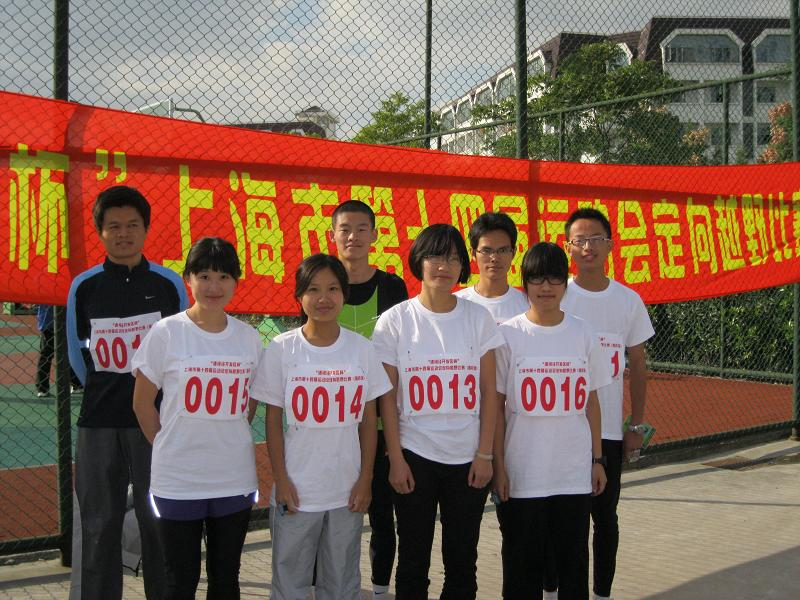

[转寄/推荐][转贴][删除][修改][设置可RE属性][上一篇][返回讨论区][下一篇][回文章][同主题列表][同主题阅读][从这里展开]
发信人: cccccm (如影成风~), 信区: outdoor
标 题: 交大在市运会高校定向越野比赛中喜获佳绩（上图
发信站: 饮水思源 (2010年10月31日00:50:06 星期天)
市运会高校组定向越野比赛今天在杂草丛生的华东师范大学比赛，全市十一所高校组
队参赛，每队男女各4名队员，各取前三成绩决定男女团体名次，个人前八名获得个人奖。
在华师大和电力学院派专业定向越野队，体育学院也参赛的情况下，交大男女队均 获
得了团体第四名，交大和solaji还获得了体育道德风尚奖。
具体成绩如下：
男子团体：
第一名：华师大
第二名：电力
第三名：上体
第四名：交大
第五名：上大
第六名：同济
第七名：海洋
第八名：复旦
女子团体：
第一名：华师大
第二名：上体
第三名：电力
第四名：交大
第五名：复旦
第六名：上财
第七名：海洋
第八名：同济
此次我校参赛八人由野协两男两女、跑虫两男两女组成；在比赛中大家都全力以赴，
跑出了不错的成绩。
首先感谢国家。然后感谢体育系的支持，特别感谢姚老师对我们的培训；感谢比赛中
大家的配合和相互支持。
学校发的装备很赞，一件白色校名汗衫，一条男生XXL，女生XL的九分裤。。。
上图~
 screen.width - 200){this.width = screen.width - 200}">
|
[转寄/推荐][转贴][删除][修改][设置可RE属性][上一篇][返回讨论区][下一篇][回文章][同主题列表][同主题阅读][从这里展开]